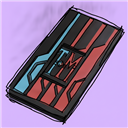
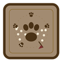

How to install a plugin from a custom repository
- In the game, type
/xlsettingsto open the Dalamud settings. - Select the Experimental tab.
- Find Custom Plugin Repositories. Paste the repository URL of the plugin into the empty field.
- Select the + button, then select Save and Close.
- Type
/xlplugins. Find the plugin by name and select Install.
CAUTION: Plugins from custom repositories do not get a review from the Dalamud team. Add only repositories that you trust.
3 plugins
-

Time Memoria
v3.7.7.15 ReleasedRemember every step, Warriors of Light.
Quest progression and pacing. Time Memoria records when you complete quests and shows how your time spreads across the story. It is a notebook for your journey, not a scoreboard.
https://raw.githubusercontent.com/LegendsOfTheGame/TimeMemoriaV3/main/repo.json -

Bestiary Mapper
v1.0.0.15 ReleasedFind every Master's Bestiary beast on the map.
Lists every beast in the Master's Bestiary (Beastmaster) with the enemy it is tamed from, its zone, its minimum level and its Kornago Gourd unlock. Select an entry to put a flag on its location on the in-game map.
https://raw.githubusercontent.com/LegendsOfTheGame/BestiaryMapper/master/repo.json -
Bait Lookup
SoonType a fish name, get the bait.
Look up a fish by name or Fish Guide number. Bait Lookup shows the bait, the mooch chain and the fishing hole in one line, with a map flag.
Not released yet.